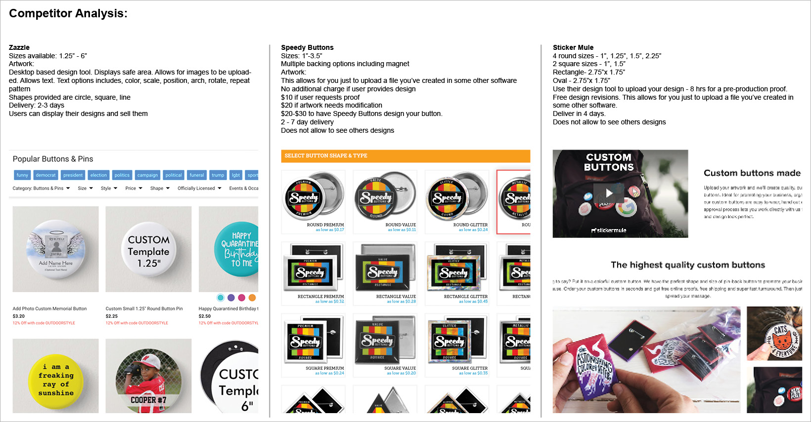
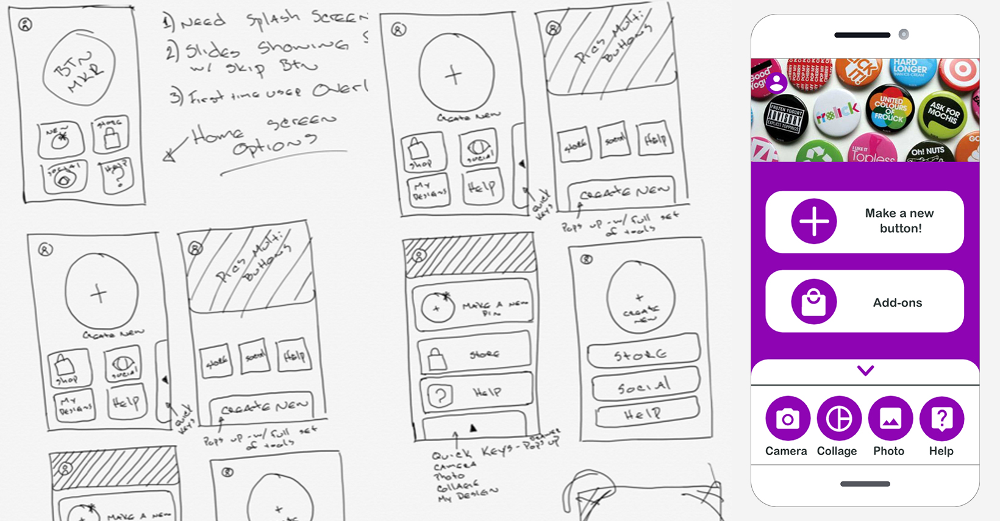

Brief
I’ve been interested in UX and UI design. I took the Udacity Product Design course and this was it’s outcome. The course covers, product ideation and validation, UI/UX design, design sprints and identifying key metrics. Students can choose to ideate their own unique product or complete the course with one of their examples. I created a unique app that enables a user to design their own pin-back buttons.
Ideation and validation
An original idea is hard to come by. The course suggests some ideas to complete the project. I was making some pin back buttons for a non-profit I volunteer and was considering going that route. Then I realized that pin-back buttons are something that most everyone likes! My next thought was: Is there a convenient way for anyone to design and make a button. Of course there is. – Web based services like Zazzle. I thought the idea was dead, until I did further research and realized that all option were desktop web based. So now the challenge is to create an application that can be accessed on a mobile device so users can create buttons on a whim. A key component of the design is to build-in restrictions to allow the user to create a beautiful design without letting them feel limited by the process.
Features, Personas, User flows
During the course I made an effort to make this as close to a actual project request as possible by creating a project requirements chart. Within this chart I identified the needs of the business and the needs of the user. I created flow charts identifying happy paths and fringe cases. User personas were created to identify the various types of users for this app. The users range from complete novices to super users.
Design Sprints
Low fidelity prototypes were designed early on to test assumptions. This helped immensely to quickly sketch UI elements and to test user flows. As the project progressed, high fidelity protypes where created to administer more user tests. Many designs were reiterated based on these tests. I am fortunate to have access to UX designers that agreed to meet with me and critique my designs. Together with their feedback and the user tests I was able to create an experience I feel confident is intuitive.
UI Design/ Visual Design
A simple color pallet comprised of black, grey and white tones is utilized in the design canvas of this app. This allows for an uninterrupted work space for the user. The hot pink/ purple, I affectionally named “Beat” is the brand color. This color embodies the energy and appeal of pin-back buttons. The shapes throughout the experience give a nod to shape of the buttons themselves. This roundness carries on the buttons as well. The whole UI underwent many iterations based on user tests.
My Role
Visual Design & Motion Design
Team
Solo project for a course.
Feedback and critiques by Amazon employees